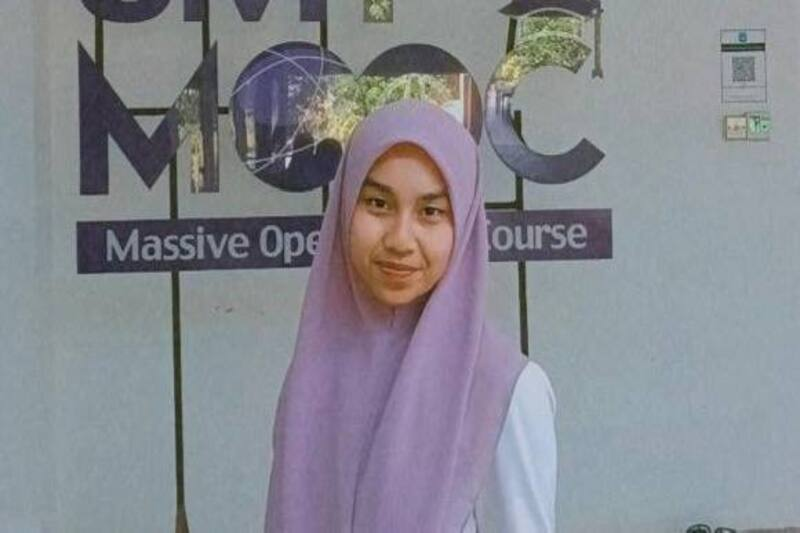
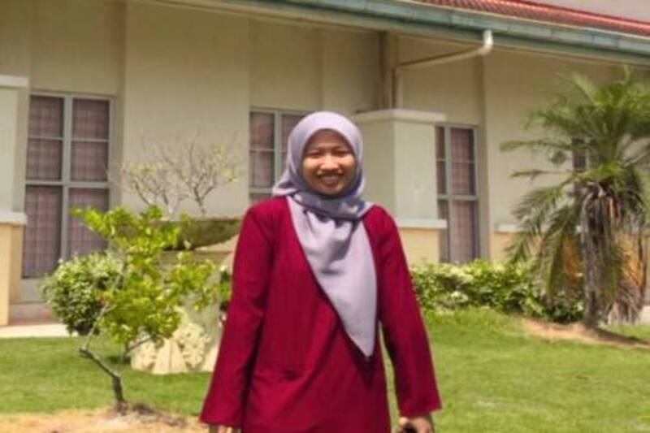

Awarded for achieving a harmonious balance of flavors, textures, and culinary techniques,
the Masters of Culinary Harmony Distinction highlights Hera DishCovery's chef as a true maestro
orchestrating a symphony on the plate. This accolade acknowledges the chef's exceptional
skill in creating dishes that tantalize the taste buds and leave a lasting impression.
S65705 Mohd Efey Fareydshah
Sustainable Culinary Champion Accolade:
Honoring Hera DishCovery's commitment to sustainability, this award applauds the chef's exemplary efforts
in championing eco-friendly practices and responsible sourcing. From farm-to-table initiatives to
minimizing food waste, the Sustainable Culinary Champion Accolade showcases the chef's dedication to
creating delicious, planet-friendly dining experiences.

S65385 Noratikah
Culinary Cultural Fusion Laureate:
Celebrating the chef's expertise in merging diverse culinary traditions,
the Culinary Cultural Fusion Laureate recognizes Hera DishCovery for its dedication
to creating a global culinary experience. From seamlessly blending international
flavors to honoring cultural authenticity, this award acknowledges the chef's role
in fostering a rich tapestry of taste that transcends borders.

S66833 Nur Haziqah
Innovative Flavor Maestro Award:
Recognized for pushing the boundaries of taste, this prestigious award celebrates
Hera DishCovery's chef for their exceptional talent in creating innovative flavor profiles.
From unexpected ingredient pairings to groundbreaking techniques, the
Innovative Flavor Maestro Award acknowledges the chef's dedication to redefining culinary boundaries.